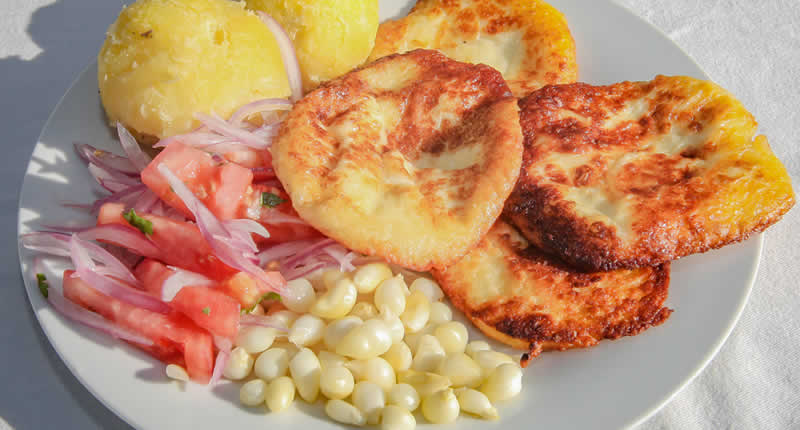

Quesillo
📍 Yura Viejo
Producto tradicional elaborado a base de leche, relacionado con la gastronomía de Yura Viejo.

Bebidas tradicionales
📍 Yura
Bebidas tradicionales que forman parte de la gastronomía local.
Maíz tostado
📍 Yura Viejo
Preparación tradicional a base de maíz, utilizada como acompañamiento.
🍲 Timpusca
📍 Yura
Preparación tradicional de la gastronomía arequipeña, conocida por su caldo sustancioso.
🥩 Charqui
📍 Yura
Carne conservada mediante un proceso tradicional de secado.
🍲 Chanfainita
📍 Yura
Plato tradicional preparado con ingredientes propios de la cocina peruana.
🥤 Chicha
📍 Yura
Bebida tradicional preparada a base de cereales y consumida en diferentes ocasiones.
🍵 Ponche
📍 Yura
Bebida tradicional que forma parte de las preparaciones ofrecidas en la zona.